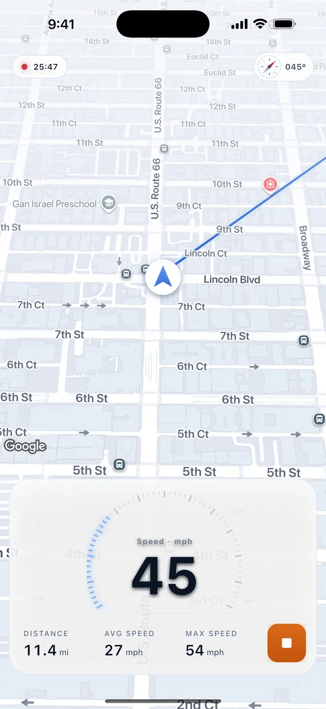

Enregistrer automatiquement chaque trajet avec DashLog — 4 étapes
Tout se résume à configurer une fois → rouler → revoir → exporter. Après la configuration initiale, DashLog enregistre tout seul : plus besoin de penser à appuyer sur Démarrer. Pas de compte, et les données restent sur votre appareil.
Réglez l’enregistrement automatique
Faites la configuration une seule fois. Sur iPhone, ajoutez une automatisation dans l’app Raccourcis qui ouvre DashLog quand votre voiture se connecte ; sur Android, associez le Bluetooth de votre voiture une fois dans l’application. Réglez l’accès à la localisation sur Toujours pour qu’il puisse enregistrer en arrière-plan.

Roulez, tout simplement
Quand votre téléphone se connecte à CarPlay ou au Bluetooth de la voiture, l’enregistrement démarre tout seul et s’arrête à la déconnexion ; l’itinéraire, la vitesse et la distance s’affichent en direct pendant que vous roulez. Pas besoin de réseau pour enregistrer, et vous pouvez toujours toucher Démarrer et Arrêter à la main.

Revoyez l’itinéraire et consultez les statistiques
Chaque trajet est enregistré avec son itinéraire, sa distance, sa durée, sa vitesse et son altitude. Rejouez la route sur la carte pour voir exactement où vous êtes passé, et parcourez les totaux par jour, semaine, mois et année dans les statistiques.

Exportez en GPX, en CSV ou en rapport de période
Exportez un trajet seul en GPX ou CSV, ou toute une période (aujourd’hui, cette semaine, ce mois-ci ou cette année) en un seul rapport. Vous pouvez aussi importer des fichiers GPX d’autres applications pour tout garder dans un même journal.

DashLog — GPS Drive Tracker
Un traceur de trajets GPS et journal de route qui enregistre automatiquement votre itinéraire, la distance, la vitesse et les statistiques avec CarPlay ou le Bluetooth de votre voiture. Les données restent sur l’appareil : sans compte, sans abonnement.
Pourquoi un enregistrement automatique et local change tout
Un journal de trajets n’est utile que s’il est complet, et ce sont justement les trajets oubliés dont on aurait eu besoin. DashLog règle ce problème en démarrant tout seul quand la voiture se connecte : chaque trajet est enregistré sans que vous y pensiez. Et comme les données sont stockées localement, sans compte, l’historique détaillé de vos déplacements ne dort pas dans le cloud de quelqu’un d’autre.
Penser à démarrer, puis tout synchroniser
Il faut lancer l’enregistrement avant chaque trajet, et vos itinéraires sont envoyés vers un compte sur le serveur de quelqu’un d’autre.
Démarre tout seul, reste sur votre téléphone
L’enregistrement commence quand la voiture se connecte, et chaque trajet est conservé sur l’appareil : pas de compte, pas de synchronisation cloud.
À quoi sert un journal de trajets automatique
Une fois que chaque trajet s’enregistre tout seul, le journal est à vous :
- Les kilomètres parcourus, pour vos propres archives : exportez-les en CSV si vous tenez vous-même un relevé kilométrique (DashLog ne fournit pas de relevé prêt pour l’administration fiscale)
- Souvenirs de road trip : revoyez l’itinéraire exact des mois plus tard
- Balades à moto et à vélo, enregistrées de la même façon automatique
- Du GPX pour d’autres outils : exportez vers des applications de cartographie, de sport ou d’édition
Un réglage à faire correctement : l’enregistrement automatique demande l’accès à la localisation sur Toujours, ainsi que le déclencheur CarPlay ou Bluetooth à configurer une fois. Ensuite, tout fonctionne sans vous.
Questions fréquentes
DashLog enregistre-t-il les trajets automatiquement ?
Oui, après une configuration unique. L’enregistrement démarre quand le téléphone se connecte à CarPlay ou au Bluetooth de la voiture, et s’arrête à la déconnexion. Sur iPhone, cela passe par une automatisation Raccourcis ; sur Android, le Bluetooth de la voiture est associé une fois dans l’application. L’accès à la localisation doit être réglé sur Toujours. Vous pouvez aussi démarrer et arrêter un trajet à la main, d’un seul geste.
DashLog demande-t-il un compte ?
Non. DashLog ne demande ni compte ni inscription, et les trajets enregistrés sont stockés localement sur votre appareil.
Qu’est-ce que DashLog enregistre pour chaque trajet ?
L’itinéraire GPS, la distance, la durée, la vitesse et l’altitude, ainsi que des statistiques de conduite par jour, semaine, mois, année et depuis le début.
Puis-je exporter mes trajets ?
Oui. Un trajet seul peut être exporté en GPX ou CSV, ou toute une période (aujourd’hui, cette semaine, ce mois-ci, le mois dernier ou cette année) en un seul rapport. Vous pouvez aussi importer des fichiers GPX provenant d’autres applications.
DashLog est-il gratuit, et existe-t-il sur iPhone et Android ?
Oui. DashLog se télécharge et s’utilise gratuitement, sans abonnement, et il est disponible sur l’App Store d’Apple pour iPhone et sur Google Play pour Android.
Laissez votre prochain trajet s’enregistrer tout seul.
Une fois l’application installée, la configuration unique prend quelques minutes ; ensuite, chaque trajet s’enregistre tout seul. Si quelque chose n’est pas clair, c’est la personne qui l’a conçue qui vous répond directement.
grayforge.dev@gmail.com